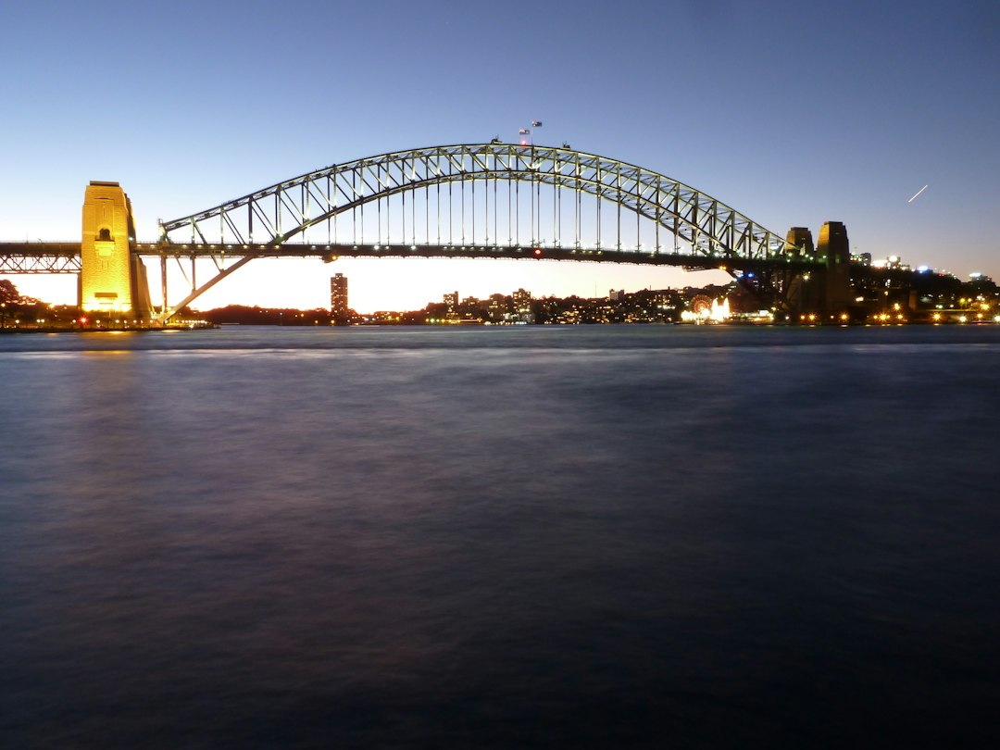

A Sydney business website brief should settle four things before design starts: the customer decision path, the right platform, the content and integration scope, and who owns the domain, hosting, content and finished site. The published guidance says standard business websites typically take 4 to 12 weeks, while cost varies with scope, design complexity, content, eCommerce needs and custom features.
For Sydney business owners comparing web design sydney options, the useful starting point is not style preference, but what the new site has to prove before a visitor enquires.
Web Design Sydney Explained
Web Design Sydney Australia frames a useful website brief around enquiries, not decoration. The source page says a site should explain the offer, earn trust quickly, load cleanly on mobile and make the next action simple for the right customer. That is a practical test for Sydney operators because a North Sydney practice, a Surry Hills cafe and a Chatswood online retailer may need different proof, page order and calls to action.
A strong brief names the business problem first. It may be more qualified enquiries, a cleaner quote path, a stronger platform, or a redesign that protects useful pages already ranking. From there, the buyer can compare whether a small business site, custom build, landing page, eCommerce store or redesign fits the job.
Who This Applies To
This guide applies to owners and managers preparing to brief a Sydney website, especially when the current site is unclear, hard to update, slow on mobile or not turning enough visitors into enquiries. It is also relevant when a business is deciding between WordPress, Shopify, WooCommerce or a custom build.
- Service businesses that need clearer quote or enquiry paths.
- SMEs and sole traders seeking a sensible budget rather than an open-ended agency process.
- Retailers weighing eCommerce design, product data and conversion trust.
- Established businesses planning a redesign without losing useful search pages.
- Campaign teams that need a focused landing page for ads, launches or promotions.
For a second crawl path on the same topic, this related Sydney web design guide covers the same broad decision area.
Platform Choice Should Follow Operations
The source page is clear that platform choice should be made for operations and ownership, not fashion. WordPress is presented as flexible and easy to update without keeping a developer on call. Shopify and WooCommerce are named for online stores where fast loading, trust and conversion matter. A custom build is positioned for a more strategy-led result around the business and its desired customers.
The sensible question is not which platform is most popular. Ask who will update pages, whether products or integrations are involved, what content is already written, and how handover will work. The page also says domains, hosting, admin access and handover should be discussed before build choices are locked, which gives buyers a concrete way to avoid confusion later.
Cost and Timing Questions to Ask Before Quoting
The published FAQ says Sydney website costs vary widely depending on scope, design complexity, content, and whether eCommerce or custom features are needed. It also says it is common advice to get several written quotes and check exactly what is included, such as content, images, hosting and maintenance. That makes the quote conversation more useful than asking for a single generic price.
A practical quote request should name the expected page count, whether copy and images are ready, any product data, redirects from an existing site, integrations, and whether ongoing care is needed. The same page says a standard business website typically takes 4 to 12 weeks to design and build, including discovery, design, development, testing and content creation. Faster or slower delivery will usually depend on approval speed, content readiness and project scope.
Ownership, Search Foundations and Handover
Ownership is a recurring issue in the source material. The page says the domain, content and finished site should stay with the client, with logins handed over and update guidance available. Buyers should ask what they receive at launch, who controls hosting, who can access the admin area, and what happens if maintenance is moved later.
Search should be treated as a foundation rather than a guarantee. The page says the build can be fast, mobile-first and structured on clean, search-ready foundations, but it also states there are no first-page guarantees. Ongoing search growth still depends on content, authority, competition and time. A careful buyer should therefore separate technical readiness from promises about ranking, sales or how quickly a visitor decides.
- Define the change. Write down whether the site must increase enquiries, clarify quoting, support eCommerce, replace an ageing platform or focus a campaign.
- Map the visitor. Separate local searchers, referral visitors and returning customers so page order matches how people decide.
- Choose the platform. Compare WordPress, Shopify, WooCommerce and custom options against update needs, ownership, integrations and handover.
- Price the scope. Ask for written inclusions covering pages, content, images, hosting, maintenance, redirects, product data and custom features.
| Build path | Best fit | Questions to ask |
|---|---|---|
| Small business website | SMEs and sole traders needing a practical enquiry site | What pages, copy, images, hosting and care are included? |
| Custom website | Businesses needing a strategy-led structure around specific customers | What decision path and proof does each page need? |
| WordPress website | Teams that want editable content without a developer on call | Who will update it and what training or handover is included? |
| Shopify or WooCommerce store | Retailers needing product pages, trust signals and checkout flow | How much product data, imagery and integration work is required? |
| Website redesign | Older sites that need modernising while protecting useful pages | Which existing URLs, rankings and content should be preserved? |
Common questions
How long does a standard business website take? The source page says a standard business website typically takes 4 to 12 weeks, including discovery, design, development, testing and content creation. Content readiness and approval speed can affect that range.
What changes the cost of a Sydney website? Cost varies with scope, design complexity, content, and whether eCommerce or custom features are needed. Written quotes should spell out inclusions such as content, images, hosting and maintenance.
Should a business choose WordPress, Shopify, WooCommerce or a custom build? The platform should follow operations and ownership. Ask who updates the site, whether products or integrations are involved, and what handover access is provided.
Can a new site guarantee first-page rankings? No. The source page says clean foundations help, but ongoing search growth depends on content, authority, competition and time.
This guide covers Sydney website briefing, platform choice, scope, ownership, timing and quote questions for business site projects.